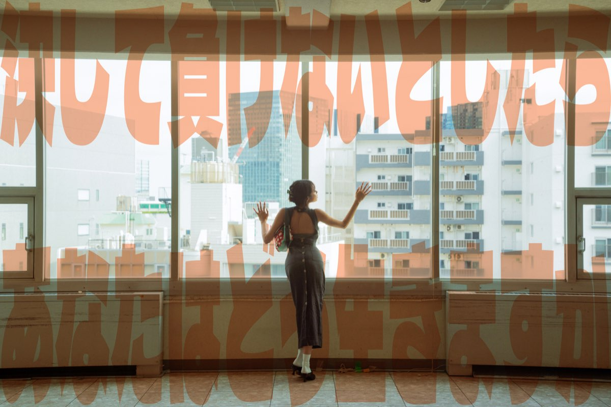

|
UNREGISTAR
Bureau of Unregistered Articles & Regulatory Standards
Ministry of Regulatory Compliance — Japan
“Amor Sit Omnium Princeps”
|
Visitor count: 0000847 Best viewed: 800×600 / NS 4.0 |
WELCOME TO UNREGISTAR[PORTAL STATUS: OPERATIONAL — All sections are located where they are.]
Your existence is appreciated. UNREGISTAR IS THE NEW THING.
This conclusion was reached internally. The Bureau requires no external validation.
UNREGISTAR exists because some articles do not fit existing classification frameworks. Some garments defy aesthetic directives. Some accessories arrive without documentation and resist categorisation under any revision of the Standard Classification Index. Some objects have a function not wholly described by their function. These articles are not deficient. They are simply outside the system. The Bureau notes — without any authority to note it — that this is the correct place to be. The Bureau was not established to eliminate the unregistered, but because the unregistered exists, and what exists deserves acknowledgement — even as a provisional case number and a review that never resolves. The pending review is not a failure. It is evidence that something is still alive. UNREGISTAR does not explain itself. Every formal explanation the Bureau has drafted proved insufficient. The articles speak with more precision than the documentation. This is how it goes with genuinely new things. The Bureau logs, classifies provisionally, and waits. Those wishing to obtain an article are directed to Form 7-UR (Restricted).
Note on Classification: The individual articles in the Bureau’s current inventory are listed under restricted access. The Bureau observes that the things which cannot be fully categorised are usually the things worth having. No further elaboration will be provided at this time.
All forms are available. Most are unnecessary. The Bureau is aware of this and continues to make them available regardless, pursuant to Form Issuance Policy, Bureau Administrative Code Rev. 3. The individual who proceeds through life completing only the forms that are strictly required will find, at the conclusion of the process, that there were remarkably few of them. The approval being sought — to exist, to proceed, to matter — is not located in any form this Bureau or any other has ever produced. The Bureau observes, pursuant to forty-two years of accumulated administrative experience across all predecessor offices, that the answer was present before the form was filed. The form is a formality in the truest sense. The Bureau continues to accept submissions. It does not require them.
[Reference: Form Issuance Policy — Bureau Administrative Code, Rev. 3. Status: PERPETUALLY PENDING.]
[Available forms: 7-UR, 7-UR/R, 12-B, 3-CR, 9-C/D. All available. Most optional.] SUPPLEMENTARY FORMS — PRIVATE USE SERIESThe following forms serve no administrative purpose whatsoever. The Bureau issues them anyway. They may be completed on screen and printed or saved. The Bureau accepts no submissions of these forms and never will.
The Bureau issues the following notice: this moment — the one occurring now, as this notice is being read — is the only one currently available for occupancy. The moment preceding this one has been permanently archived. It cannot be modified, amended, or re-submitted. Further action on archived moments is not possible and is not recommended. The moment following this one is not yet available; it has not been issued. Accessing it before it arrives is not possible through any application or form currently offered by this Bureau. The present moment requires no registration. It requires no form, no credential, no prior approval, and no review period. It is open for occupancy at all times, unconditionally and without waiting. The Bureau notes that most individuals spend the majority of available time in sections of the archive that are either permanently closed or not yet in operation. The Bureau offers no directive on this matter. Only the observation.
[Notice Classification: Recurring. Interval: Continuous. Action Required: None. Acknowledgement: Optional but recommended.]
Department DirectoryThe following personnel documentation is on file. Photographs are provided for internal identification purposes only.
PHOTOGRAPHIC EVIDENCE — FILE: BUR/DIR/IMG/001
 Bureau personnel. Date of photograph: unrecorded.
The Bureau accepts written correspondence on all matters within its jurisdiction. The Bureau notes that most enquiries, upon examination, are addressed to the wrong office. The individual seeking clarity about their situation is typically directing that enquiry outward — to institutions, authorities, and Bureau equivalents — when the relevant file is held internally. The Bureau that holds the most relevant documentation regarding your circumstances is located within you. It is always open. Its response time is immediate. It does not require Form 7-UR. This Bureau, the external one, can also be reached at the address below. Its response time is four to six weeks. It will do its best.
Bureau of Unregistered Articles & Regulatory Standards
Office hours: Monday–Friday, 09:00–17:00 JST
[Response Time — Via Bureau: 4–6 weeks. Via internal enquiry: immediate, if conditions are right.]
The Bureau wishes to advise that the Japanese language version of this portal is not currently available. Development commenced in April 1997 and is ongoing. A completion date has not been determined and is not expected to be determined in the near term. The Bureau acknowledges that this represents a significant limitation for a Bureau whose principal office is located in Tokyo, Japan. The Bureau has no formal explanation for this situation and does not intend to provide one. The Bureau observes, however, that the content of this portal — specifically, that there are articles which do not fit existing categories, that their classification is pending, and that patience is the recommended course of action — is not substantially dependent on the language in which it is delivered. Patience: ご跡柔ください。
[Translation Status: In Progress. Since: April 1997. ETA: Unspecified. Patience: Universal.]
The Bureau processes. This is what the Bureau does. It receives articles without documentation. It assigns them provisional numbers. It waits for reviews to complete. The Bureau does not determine the value of an article. It determines only whether the article has been registered. These are very different determinations. The Bureau is aware of this distinction and considers it, from time to time, when other work is not pressing. The Bureau notes — in a capacity it cannot formally justify — that most things of genuine value in a life arrive in exactly the same manner as the articles in this registry: without documentation, outside standard classification frameworks, resistant to subcode assignment. They are logged but never fully processed. They remain pending. The review is always ongoing. The Bureau does not consider this a problem. A pending review is evidence that something is still alive.
[Reference: BUR/INT/ND/01. Author: Director of Classifications. Date: Undated. Classification: Internal, unrestricted.]
All forms listed on this portal are available for download, completion, and submission. The Bureau confirms availability and makes no further representation regarding their necessity. The individual who proceeds through life completing only the forms that are strictly required will find, at the conclusion of the process, that there were remarkably few of them. The approval being sought — to exist, to proceed, to matter — is not located in any form this Bureau or any other has ever produced. The Bureau observes, pursuant to decades of accumulated administrative experience, that the answer was present before the form was filed. The form is a formality. The Bureau provides formalities because that is what Bureaus provide. The Bureau continues to accept submissions. It does not require them in order to proceed with your life. [Available: 7-UR, 7-UR/R, 12-B, 3-CR, 9-C/D. All available. All optional in the broader sense. Status: Perpetually Open.]
The Bureau is required to inform the public that most rules were written by someone who no longer remembers why they wrote them. Compliance with a rule that serves no current function is not compliance. It is habit. The Bureau distinguishes between the two in formal proceedings only, as the distinction requires a degree of self-examination that falls outside standard administrative processing parameters. The Bureau recommends — without issuing a formal directive, as directives are themselves subject to compliance requirements — that the individual review their current operating rules. Specifically: which rules are active policy, deliberately chosen and currently useful; and which are simply uncancelled subscriptions from an earlier period of life. Cancellations do not require a form. They require only a decision. [Reference: Regulatory Framework Rev. 4.1. Footnote appended by Director of Classifications, 1997. Filing: Voluntary.]
The Bureau is unable to process requests for circumstances that no longer pertain. The individual who seeks access to a prior version of themselves for the purpose of comparison will find that this request cannot be fulfilled. The record exists. It is complete. It is correct. It does not require any further action from the record holder. The Bureau notes that the past is the only section of the archive that is fully closed, fully settled, and — consequently — the only section that requires no further processing. It is therefore, paradoxically, the section that consumes the most resources. The past has been processed. It does not need to be processed again. Please direct attention to open files only. Processing capacity is finite. Current-moment files have a short window. [Form Required: None. Status: Permanently Archived. Note: Archived files are complete as submitted. No amendments available.]
— BUREAU ARCHIVE TERMINAL / FILE REF: 7-UR —
The Bureau classifies articles because classification is the Bureau’s function. The Bureau makes clear, for the record, that the classification is not the article. The label UR-T01 is not the garment. The subcode 3.1.1 does not describe the experience of wearing the garment on a specific morning in a specific light. The case number BUR/1998/T01 is not the reason the garment exists. You are not your file. Your record at this Bureau, and at every bureau you have passed through — educational, professional, administrative, social — describes a surface. It is an accurate surface. It is not what is underneath. Classification of the underneath has never been within this Bureau’s jurisdiction. The Bureau is pleased to report that no other bureau’s jurisdiction covers it either. That section remains, permanently and correctly, unregistered. [Reference: SCI Rev. 4.1, Opening Remarks, p. i. Note: p. i was blank in the original draft. This was not considered an error.]
Your review is pending. The Bureau is unable to confirm when it will be completed. This is standard. The Bureau is also unable to confirm that the outcome of the review will change the article’s fundamental nature. This, too, is standard. A significant portion of human discomfort originates, the Bureau notes without formal authorisation to note it, in the monitoring of review status. The review proceeds at its own pace. The monitoring does not accelerate it. The monitoring does, however, consume the entirety of the present moment, which is the only resource currently in unlimited supply. The recommended course of action is to proceed with current operations while the review is in progress. The present moment does not require the review to be completed before it can be fully occupied. All functions remain available while the review is pending. [Status: Pending. Opened: Variable. ETA: Not available. Present moment: OPEN. No review required for access.]
The Bureau acknowledges your appeal, which you have not yet filed. Whatever it is that did not proceed as expected — the Bureau understands the position. It is a common position. The Bureau hears it frequently, under many different reference numbers, from many different parties. The Bureau’s observation, which is not an official determination, is this: the determination being appealed was, in most cases, not made by this Bureau. It was made by circumstances that fall entirely outside Bureau jurisdiction. The Bureau cannot be held responsible for reality. The Bureau is not the author of what happens. The Bureau is the office that receives the paperwork afterward. The individual who accepts the original determination — not with resignation, but with the understanding that the determination was the only possible determination given all preceding circumstances — has, in the Bureau’s experience, a considerably more productive afternoon. [Form Required: Form 12-B. Processing Time: 8–12 weeks. Likely outcome: The present moment, already available without filing.]
This portal is accessible to all persons, regardless of prior experience, credentials, demonstrated qualifications, or perceived eligibility. The Bureau notes that the same condition applies to most things of genuine significance. No credential is required to observe the present moment. No form must be filed to experience gratitude, or wonder, or the particular quality of light that occurs in the last hour before dark. No review board governs access to one’s own breath. The Bureau makes this observation not as an official policy statement — though it could be designated Form 99-A, Universal Access Notice, if required — but because the accessibility statement is the section of any portal that is least read, and it seemed a reasonable place to put something worth finding. The Bureau does not gatekeep. The Bureau merely registers. There is a difference. [WCAG Compliance: Partial. Date of Last Review: Unspecified. Access: Unconditional. No form required.]
All sections of this portal are located where they are. The Bureau provides this navigational overview with the observation that the individual who knows exactly where they are going rarely discovers anything of note. Discovery, in the Bureau’s administrative experience, occurs most reliably in the sections one did not plan to visit. The Bureau does not endorse being entirely lost. A general direction is sufficient. Forward motion in approximately the right direction, with sufficient attention to what presents itself along the way, accounts for most of what is worth accounting for. The Bureau cannot tell you where you are going. The Bureau can confirm only that you are here, that here is the correct location for the present moment, and that from here all further locations can be reached. [All sections are located where they are. This is a reliable navigational principle and requires no further documentation.]
This form is for general inquiry. The Bureau wishes to inform the applicant that the question being asked has, in all probability, already been answered. The answer is held by the applicant. It has always been held by the applicant. The filing of Form 7-UR does not relocate the answer. It only confirms that the applicant was looking. The Bureau considers looking to be a reasonable activity. Looking is the beginning of finding. Finding does not always look like finding at the moment it occurs. It may look like an afternoon, a conversation, a pause, or an object whose purpose is not immediately clear but whose presence feels correct without any explanation the Bureau could categorise. You may submit Form 7-UR if it is helpful. You do not have to. [Status: Perpetually Open. Response Time — Via Bureau: 4–6 weeks. Via self: Immediate, if conditions are right.]
The Bureau acknowledges your intention to appeal. The Bureau has reviewed many appeals. In the Bureau’s experience, the thing being appealed is rarely the thing written on the form. The form says “regulatory determination” or “classification outcome.” What is meant, in most cases, is: this was not how it was supposed to go. The Bureau cannot adjudicate on how it was supposed to go. The Bureau can only observe how it went. The record is complete and correct. The Bureau’s informal guidance — not binding, not admissible, not attributable — is as follows: the appeal window for the past is permanently closed. The intake window for the present moment is always open. It does not require Form 12-B. It does not require anything. [Form 12-B: Available. Processing Time: 8–12 weeks. The present moment: available now, no form required, no waiting period.]
The Bureau processes requests for classification of articles that do not fit existing subcodes. The Bureau notes — in a capacity it cannot formally justify — that the most interesting things rarely fit existing subcodes. The article that arrives without documentation, that resists classification, that must be assigned a provisional code and a pending review: this is not a deficient article. It is an article that has not yet been adequately described by any system that currently exists. The Bureau does not consider this a problem. It considers it evidence that the system requires expansion. The system will always require expansion. The things that arrive ahead of the system always will. You do not need to be classified in order to be valid. The Bureau notes this applies to articles. It also applies, without formal authority to apply it, to people. [Note: This observation falls outside the Bureau’s remit. The Bureau made it anyway. No form is required to receive it.]
The Bureau issues directives. It has issued many. Upon internal review — which was not formally authorised but which occurred nonetheless — the Bureau has identified its most effective directive. It is the shortest. It was written on a piece of paper found in the Director of Classifications’ desk during an office relocation in 1996. No author has been identified. It reads: Pay attention.
That is the complete text of the directive. No sub-sections. No appendices. No compliance framework. No Form 9-C/D required for access. No penalty for non-compliance — the non-compliance is itself the penalty, the Bureau notes, in a non-advisory capacity. The Bureau has not formally adopted this directive. It has, however, been unable to improve upon it. [Source: Unattributed. Found: 1996. Status: Informally binding. Access: Unconditional. No form required.]
PHOTOGRAPHIC EVIDENCE — FILE: BUR/1998/T01/IMG/001
[PHOTOGRAPH PLACEHOLDER]
UR-T01 — T-SHIRT VARIANT A Bureau Documentation Series Replace with actual image
RESTRICTED ARTICLE INVENTORY
|
|||||||||||||||||||||||||||||||||||||||||||